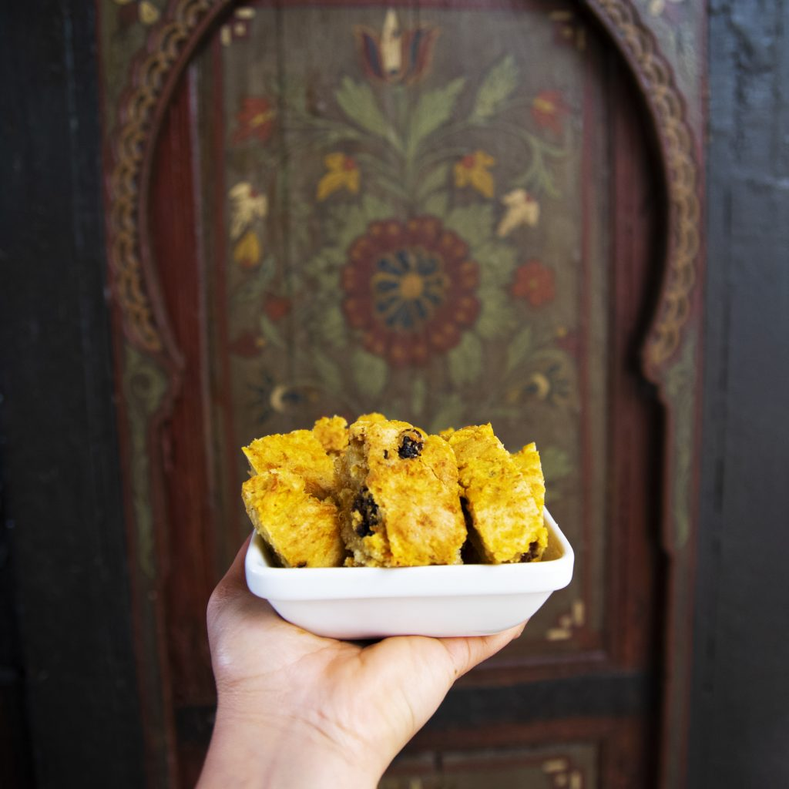

“Pan Oshawa”
Receta del Instituto de Macrobiotica Nishime
Sitio original

Bizcocho de avena y manzanas, sin harinas, azucar ni huevo. Crocante por fuera, cremoso por dentro.
Ingredientes
- 3 vasos de copos de avena finos
- 2 vasos de zumo de manzana
- 1kg manzanas ralladas (por la parte gruesa del rallador)
- 1/2 vaso de pasas
- canela en polvo ( al gusto)
- puede añadirse ralladura de naranja o limón
Preparación
- Mezclamos los copos con el zumo de manzana y las pasas y dejamos reposar durante 2h(como mínimo)
- Rallamos la manzana y la incorporamos a la mezcla junto con la canela y la ralladura de naranja o limón si se desea.
- En una bandeja de horno colocamos papel vegetal y extendemos la masa por encima.
- Metemos al horno previamente calentado a 160º durante 1h.
- Está lista cuando vemos que ha cogido consistencia como para poder cortarla. Queda tostadita por fuera y muy tierna por dentro.
Volver al indice